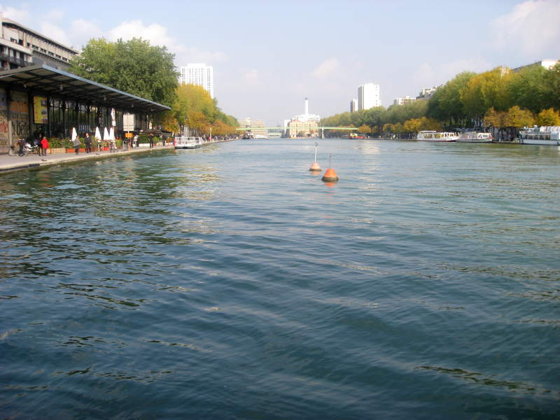
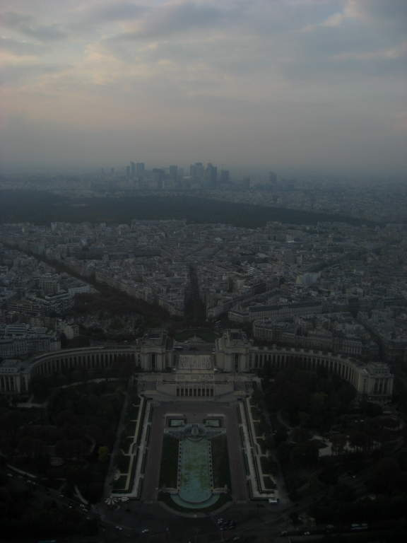
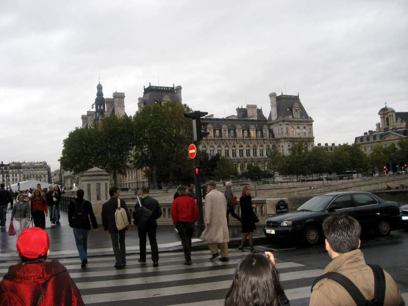
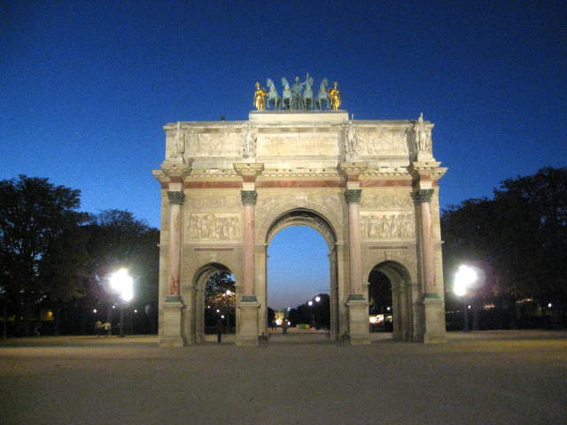

I arrived in Paris and was hunting for my hostel. It wasn't in the most wonderful area, but it felt open and peaceful.

I took the scenic route to the hostel, walking along the water.
This is the most impressive building I saw on the way.
They tried to lift up my spirits by playing bocci ball.
I made it to the St. Christopher-Paris hostel! It was a very well-designed hostel, where you can slide out a cage, put your stuff in it, lock it, and slide it back. However, my cage blocked the door that 8 people needed to get through. Also, these cages were awfully squeaky, and sometimes wouldn't slide back until shifted around. I did like the curtain you could pull over for privacy. They had little lights for each bed. My light bulb was missing. I asked three times for them to either put the light bulb in for me, or let me put one in. They would not do either.
It was a mostly well-designed hostel, with a staff that really sucked balls. I don't know if this hostel is a lot better or worse than the other hostels in Paris. All I know is that people in Paris were all very rude to me, with very few exceptions. A nice guy named Gilras was an exception. Forgot to take a picture of him.
Every so something clues you in to something that's wrong with you. I get out of the subway and start trying to find the Eiffel Tower. I fail to see ...this... behind me, and walk directly away. Know that expression "Can't miss it!"? You can't use that with me.
I started to walk under the Eiffel Tower.
It was big, but I figured it had to be big. People have been making such a big deal about it. I debated whether to get my picture taken with the Eiffel Tower in the background. Ultimately, I decided it did not deserve me in a picture with it.
They had a carousel and other amusements near the Eiffel Tower, along with that horse statue.
I made it up to the lower observation deck of the Eiffel tower. This building drew the attention of my picture taking. Before I go on, I'll assert that Paris is an absolutely beautiful city. It's just the people were rude.
Here's a picture up the Eiffel tower from partway up. I hope it supposed to bend like that.
Just like in Japan from the Tokyo Tower, I was able to watch a soccer game from high up. I can't tell -- is there a goalie in that net?
Yay, the beautiful Seine river. It looks even better at night, but I liked the cloudscape.

Here's that flashy building from the top observation deck! It was significantly higher and higher priced.
When you go to an observation deck, the typical thing to do is to walk around and take a panoramic series of pictures. I'm not going to make you look at all of them. Only one more.
Here's a strange urinal I saw in Paris. You stand INSIDE the urinal, but your feet stay clean!
This is my first meal in France. Lots of creamy chicken. Wine too. It seems typically a restaurant will hack up one baguette and put it in a basket for you. I've had hacked-up baguette in other French restaurants too. Also important in this picture is the Paris map. Study it well! My first half hour in Paris was spent figuring out the location of the train station I started out at.
Greek architecture looks best at night.
Gothic architecture looks best at night too, but I wasn't about to sit around and wait for nightfall here. This is the Notre Dame cathedral. If you haven't seen The Hunchback of Notre Dame, I suggest you do. Good movie, and it will make you appreciate this cathedral all the more.
Above the archway are sculptures that tell the stories of the Bible. Back in the day, people were not as literate, and these were sculpted to let them learn the stories in spite of that. Christian leaders universally agree that they are still needed today, citing many examples of emails, forum posts, and blogs on the internet as proof of illiteracy.
Okay, okay, I DID wait till night. Here's Notre Dame at night. The famous "flying buttresses" are visible here. Basically it was just one innovation within a long line of innovations in cathedral architecture. I personally like how it makes the cathedral look like a giant dinosaur skeleton, complete with rib cage. Christian leaders might point out that they're elegant and beautiful. I hate to break it to them, but no one normally considers a rib cage to be a work of art.

There are so many buildings in Paris that would be suitable as the sole tourist attraction of a smaller city. Paris doesn't share its buildings though. It hoards them. Very rude.
Notre Dame was closed, so I consoled myself with this hot dog/french fry munchie. I like how you eat it all at once. Reminds me of "Fat Cats" at Rutgers.
As I was waiting to meet up with Gilras, a couchsurfer who I was going to have a beer with in Paris (Around 8-9pm, well after closing hours), the doors of Notre Dame opened. A cross started flashing eerily. I saw a bluish white cloud floating over it. I heard eerie music too. Apparently Notre Dame was trying to bait people to walk in and watch a movie while being harassed for donations. I definitely wanted to check it out, so when Gilras showed up, we walked in. The movie was supposed to be about the origins and construction of Notre Dame, but instead, the movie was mostly about the Bible. We left after 10 minutes.
This fancy building is the Palace of Justice, which serves as a courthouse. If your wine is not up to code, people here will incarcerate you.
The French apparently like Japanese animation. This is for my anime-loving friends who are actually reading this.
More flashy buildings. I think I was a bit lost when I took this picture. Fortunately, in most cities, I find they have a lot of "You are here" maps, so even if you are incapable of using your own map, you still might find your way back some day.
Ferme means "closed". I learned this when I reached the Pantheon. See that dude blocking the opening in the fence? He taught me that.
I went to a beer-friendly restaurant. It was at this restaurant where I met the rudest Parisians of all Parisians. I tried to ignore his rudeness. Looking on the menu, I was enthralled with the selection of French beers. In fact, this was the first time I considered the existence of French beer. Till then, I guess my subconscious assumed they identified with Belgian beer, and that would be good enough.
This beer, a Faro Lambic beer, is not sold outside of Belgium and France, from what I hear. I certainly have looked all over for it in the US, with no success. It's made from sugarcane but is not overly sweet. Tastes really good!
I got another chopped up baguette, a garden salad (much like garden salads in the US), and a leek quiche.
For the main meal, I ate this duck on little potato pieces. It was a lot greasier than I'm used to. You can actually see the potato pieces swimming in the grease on the plate. The tomato cheese thing was nice. It was in general a very good meal, but I decided long ago that the Italians are the best at food.
This was taken as I was trying to find my way back to the Seine River. This street looked very European.
As I neared the river, I saw this wonderful fountain with some hip-hop dancers showing their moves in front of it.
It looked like this guy had something crawling up his pants. That to me is the pinnacle of a successful performance.

Another soldier on a very immobile horse.

The Seine River as night approached was one of those dreamy scenes that will stay with me forever. As usual, no picture I take is going to do it justice. I'd say you have to be there, but I don't think Parisians deserve your business.

This is not the famous Arch of Triumph. There is a path that leads directly from this arch (near the Louvre) to the Arch of Triumph. This path perhaps is open during parades or whatever, but at night, it certainly was not. However, that tiny square thing lit up in the distance that you can see through this arch is the Arch of Triumph. I didn't necessarily know how obstructed at night the path was from this arch to that one, so I decided to try to walk straight there anyway. According to the book I read, I knew there was a tunnel I eventually had to take to get to the arch, to avoid traffic surrounding it. I love diving into the unknown. The yellowbrick road awaits!
Here's a big ol' obelisk, just like I saw all over Rome. I guess France got into the obelisk game too. I can easily see the Louvre wanting to show that it could have obelisks if it wanted to.
I had to go around something that looked like a miniature central park, guarded with an iron fence. I made it to the main road leading to the Arch of Triumph. Along the way, I saw a lot of military things being displayed. Looks like it was a French aerospace industry street fair.
You can't see it, but this one was labeled the "Eurocopter". Just adorable.
Here was an unmanned aerial vehicle and its launcher. This is the type of plane Europe would spy on you with.

Some sort of radar/satellite dish/basketball backboard.
This looks like either the inside of a space station, a space vehicle, a moon base, or a Mars base. It could also be where they quarantine people who fall victim to American fast food.
I see it says "control suite" in there. I assume if you were stuck in a space station, you can use this to wave a robotic arm at your loved ones.
Last time I saw something like this, it was at a really extravagant art festival in Coconut Grove in Florida.
I finally made it to the Arch of Triumph. The arch stays open pretty late. The traffic surrounding it never seems to let up. It's a six lane traffic circle that you have little chance of crossing without help. That help came in the form of the aforementioned tunnel. When under the arch, I saw a guy lie on his back and take a picture. I did the same thing and saw this.
I looked up and saw the undersides of all the 284 steps I would get to climb.
For me, at least for now, 284 steps is no big deal. Here's the inside of the top of the arch.
They had a little model of the arch, and a gift shop. I didn't really like French souvenir shops. I bought a wooden plate at one shop, but not this one.
Behold, la Tour d'Eiffel! That's about all of my French. Two spotlights swing around on the top of the Eiffel Tower, so at night in Paris, you can always look up and see how to find it. Lots of colors though in the "City of Lights". The way the Eiffel Tower lights up with dark blue looks very surreal.
I took a picture this way too. leading back to were the Louvre would be. I can't tell if I can see the Louvre or not, but I can see that one building on the left that was changing its color repeatedly, trying to look good for the camera. In this picture, it was purple. I honestly don't know how impressive this would have seemed if not for the Eiffel Tower and the purple building.
Here's all the stairs I had to walk heading back down... You are getting sleepy. Verrrry sleeeeeeepy...
Around the base of the Arch of Triumph was France's tomb of the unknown soldier for the First World War.

I saw this and said, "I'll have a Napoleon!" You can imagine they don't call it that in France. Instead, I had to point like a monkey and flash money to acquire my prize. I later learned they call this "mille feuille". Trust me; if you don't know French, don't bother trying to pronounce that.
Here's a speedy TGV train. The quality of the train tracks in France is apparent when you stare at them from inside the train. Then again, I'm not a mechanical engineer, so maybe I don't know what I'm looking at. It seemed the rest of the ground rushed by while the train track remained a perfectly still straight line.

Here's a view of another train station in Paris. Thought it looked cool.
Versailles
Louvre
Back